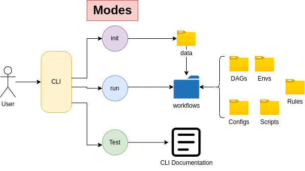

CytoSnake Tutorial
About
This tutorial assumes that you have follows the installation steps and you are ready to start taking off with CytoSnake!
Cytosnake is a command line interface (CLI) tool that contains a multitude of workflows for analyzing morphological features obtained from microscopy images of cells.
Concepts
Modes
Modes provide options on how the user can change the functionality of CytoSnake. For example, if you would like to initialize your files for a specific workflow, you can simply type:
using the init mode
cytosnake init <DATAFILES> <METADATA> <DATATYPE>
DATAFILE will refer to the raw data that you are going to analyze,
METADATA refers to the associated metadata data directory that was generated along with the dataset
DATATYPE flag tells cytosnake weather these morphology feature datasets were obtained from CellProfiler or DeepProfiler
The init mode setups the provided input files into its appropriate file structure that accommodates all the workflows available in Cat Snake
Currently, cytosnake supports three different types of modes, which are:
inti: setups up input files for workflows
run: execute a specific
help: executes CytoSnake’s CLI help documentation.
Configurations
CytoSnake has configurational directory that allows users to change the configurations for their specified workflows.
The configuration files are written in .yaml files, which contains all the functions and its parameters used within the workflow. The workflow’s documentation provides information about the configuration files involved within the workflow.
Users can easily find and change parameter values by accessing those configurational files.
Usage
Download data
In this usage tutorial, we will be using data cell health datasets.
You can download these datasets (quite large files):
plate_data_1: (10GB download)
plate_data_2: (11GB download)
metadata_folder: Contains all associated perturbations per well
barcode: Maps plate id with plate names
You can also use your dataset but some of the tasks that are being done here are specific to the files downloaded.
Setting up files
The first step it to prepare your files for analysis, this is simply executed by typing:
cytosnake init -d SQ00014613.sqlite SQ00014613.sqlite -d metadata -b barcode_platemap.csv
In instances where you may have a lot of data, CytoSnake supports wildcard variables.
cytosnake init -d *.sqlite -d metadata -b barcode_platemap.csv
If there is an instances were you are going to use morphological datasets obtained from DeepProfiler, then you must explicitly state the datatype flag when using init:
cytosnake init -d *.sqlite -d metadata -b barcode_platemap.csv --datatype deep_profiler
Once entering the command, your out put should look like this:
INFO: Formatting input files
INFO: Formatting complete!
Running Workflow
In your current working directory, a new folder ./data should appear in your current directory. Inside the directory, it should contain symbolic links of your data files that you have provided in the init mode. This directory serves as centralized location of data for the workflows to have access too. Now that you have your data folder, you can simply select which workflow to execute by using the run mode. Since the cell-health dataset contains data extracted from CellProfiler, when we will used the cp_process workflow.
cytosnake run cp_process
If your data contains features that were extracted by using DeepProfiler, then the dp_process workflow must be executed
cytosnake run dp_process
These workflows contain their own environments, therefore there is not need to download the dependencies that our workflows require. When the the job is done, the last message you should see is:
[Mon Sep 19 14:29:07 2022]
Finished job 0.
2 of 2 steps (100%) done
This indicates that all tasks within the workflow is complete.
Accessing data
In your directory, a results folder will be produced which contains all the outputs generated from the workflow. To visualize those outputs, simply type:
cd results/preprocessing/ && ls
This will take you to the directory where the generated outputs are and lists all the files.
consensus.tsv.gz SQ00014614_aggregate.csv.gz
SQ00014613_aggregate.csv.gz SQ00014614_augmented.csv.gz
SQ00014613_augmented.csv.gz SQ00014614_cell_counts.tsv
SQ00014613_cell_counts.tsv SQ00014614_feature_select.csv.gz
SQ00014613_feature_select.csv.gz SQ00014614_normalized.csv.gz
SQ00014613_normalized.csv.gz
These files contain different types of information that is denoted by their suffix:
_cell_counts.tsv: Number of cells in the dataset
_aggregate: Refers to the aggregated dataset. Single cell dataset (your inputs) are aggregated into the “well” level.
_augmented: A datasets contains metadata information in a per well level. For example, types of metadata can be: well position, treatments, controls, etc
_feature_select: contains the selected morphological features that will be used to generate consensus profiles
_consensus: is the consensus profile contains unique morphological signatures associated with a specific external treatment (drug, perturbations, controls (pos/neg), etc)